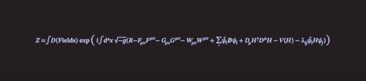

In centuries since Galileo, thousands of theories and experiments have peered into smaller and smaller distances converging on a single picture of the structure of matter.
This daunting looking formula is where we all end up.
It gives the correct answer to hundreds and thousands of experiments, in some cases with an accuracy that is unprecedent in science. It is, by any measure the most successful scientific theory of all time. Yet, for something extraordinary, we give it a rubbish name, we call it, The Standard Model.
The theories and discoveries of thousands of physicists since the 1930s have resulted in a remarkable insight into the fundamental structure of matter: everything in the universe is found to be made from a few basic building blocks called fundamental particles, governed by four fundamental forces. Our best understanding of how these particles and three of the forces are related to each other is encapsulated in the Standard Model of particle physics. Developed in the early 1970s, it has successfully explained almost all experimental results and precisely predicted a wide variety of phenomena. Over time and through many experiments, the Standard Model has become established as a well-tested physics theory.
There are four fundamental forces at work in the universe: the strong force, the weak force, the electromagnetic force, and the gravitational force. They work over different ranges and have different strengths. Gravity is the weakest but it has an infinite range. The electromagnetic force also has infinite range but it is many times stronger than gravity. The weak and strong forces are effective only over a very short range and dominate only at the level of subatomic particles. The weak force is weaker than the strong force and the electromagnetic force, but it is still much stronger than gravity. The strong force, as the name suggests, is the strongest of all four fundamental interactions.
Three of the fundamental forces result from the exchange of force-carrier particles, which belong to a broader group called “bosons”. Particles of matter transfer discrete amounts of energy by exchanging bosons with each other. Each fundamental force has its own corresponding boson – the strong force is carried by the “gluon”, the electromagnetic force is carried by the “photon”, and the “W and Z bosons” are responsible for the weak force. Although not yet found, the “graviton” should be the corresponding force-carrying particle of gravity. The Standard Model includes the electromagnetic, strong and weak forces and all their carrier particles, and explains well how these forces act on all of the matter particles. However, the most familiar force in our everyday lives, gravity, is not part of the Standard Model, as fitting gravity comfortably into this framework has proved to be a difficult challenge. The quantum theory used to describe the micro world, and the general theory of relativity used to describe the macro world, are difficult to fit into a single framework. No one has managed to make the two mathematically compatible in the context of the Standard Model. But luckily for particle physics, when it comes to the minuscule scale of particles, the effect of gravity is so weak as to be negligible. Only when matter is in bulk, at the scale of the human body or of the planets for example, does the effect of gravity dominate. So the Standard Model still works well despite its reluctant exclusion of one of the fundamental forces.
Moreover, although the Standard Model accurately describes the phenomena within its domain, it is still incomplete. Perhaps it is only a part of a bigger picture that includes new physics hidden deep in the subatomic world or in the dark recesses of the universe.